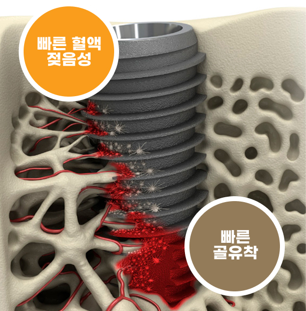
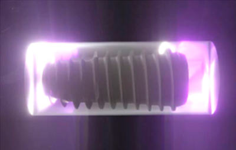
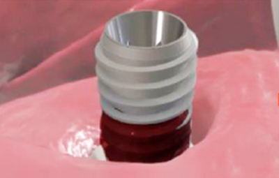
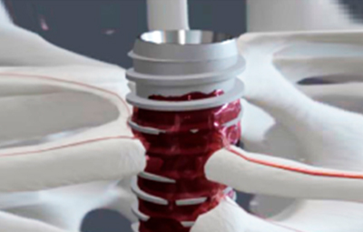
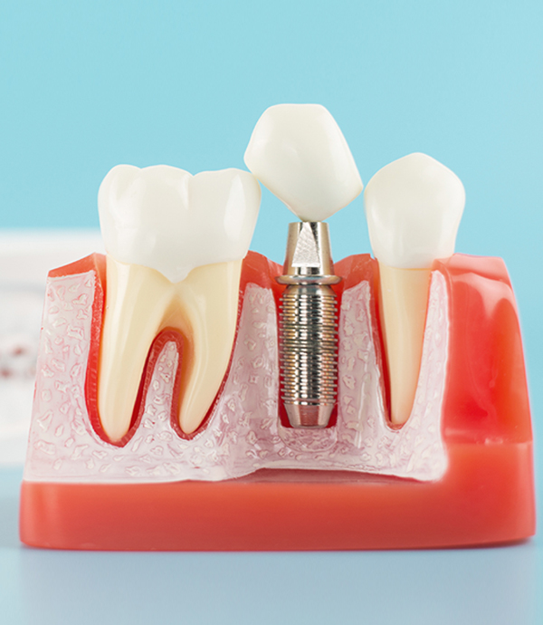
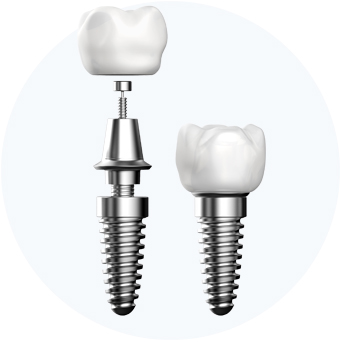
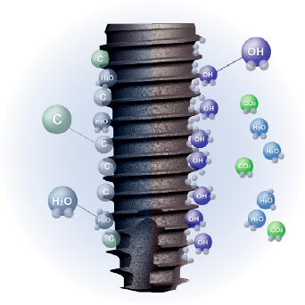
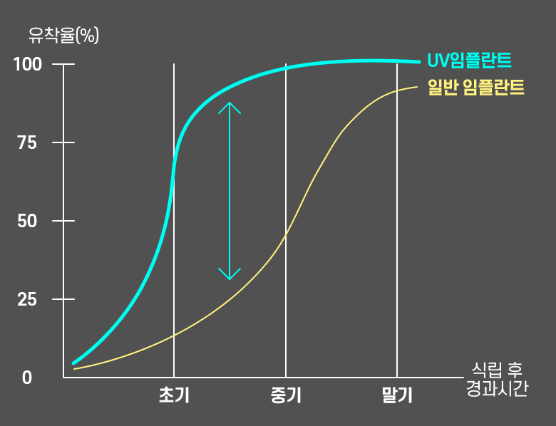

임플란트 식립 전 UV 조사기로
임플란트 표면에 UV(자외선)을 쐬어줍니다.
UV 표면 활성화 처리로
임플란트와 잇몸뼈의 결합을 돕습니다
<%=m_client_en%>
빠른 골유착률
UV 임플란트는 밀폐형 광촉매 자외선 처리 기술력으로
뼈와 임플란트를 더욱 빠르고 더 강하게 결합 및 고정을 시킬 수 있어
임플란트의 성공률을 높이고 치료기간은 단축하게 됩니다..


임플란트 식립 전 UV 조사기로
임플란트 표면에 UV(자외선)을 쐬어줍니다.

UV(자외선)로 인한 광촉매 효과로
임플란트 표면을 초친수성 상태로 변화 시킵니다.

초친수성 상태의 임플란트는 세포와 단백질
반응을 활성화시켜 골 유착을 유도합니다.
UV를 쬐어주어 임플란트 표면에 부착된 유기물이 제거되어 노화방지 효과
임플란트 표면에 충분한 혈액 공급을 통해 임플란트 식립 후 빠른 골유착 유도
SLA 표면 처리된 임플란트 표면 성질(전하)의 변화로 세포와 단백질반응을 활발하게 하여 골유착 속도 증대
3~4주의 회복기간으로 일반 임플란트에 비해서 회복기간 단축 가능

| 일반 임플란트 | VS | UV 임플란트 |
|---|---|---|
 |
식립 임플란트 종류 |
 |
| 약 8 ~ 12주 | 골유착기간 | 약 2주 |
| SA | 표면코팅 | HSA + UV 조사 |
| 잇몸뼈의 강도가 강해야 가능 |
식립 가능한 뼈의 강도 |
잇몸뼈의 강도가 약해도 가능 |
| 보통 | 뼈 재생속도 | 초기 골유착 기간 단축 |
일반적으로 8~10주 사이에 골유착이 이루어 지는 일반 임플란트에 비해
UV임플란트는 수술 후 3~4주 사이에 뼈와 임플란트가 고정이 되어
높은 수술 성공률은 물론, 당일 임플란트 식립이 가능하게 됩니다.

잇몸뼈가 약하거나
부족하여 골이식을
해야 하는 경우
당뇨와 고혈압 등의
전신질환이
있는 경우
임플란트
재수술이
필요한 경우
임플란트 후
즉시 보철을
원하시는 경우
병원에 자주 내원할 수
없거나 긴 시술기간이
부담이 될 경우